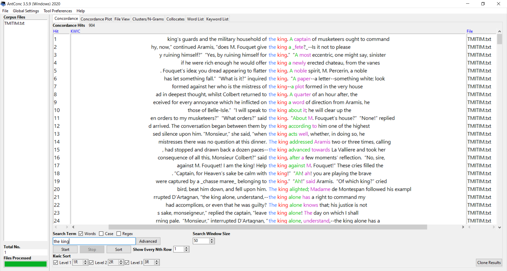
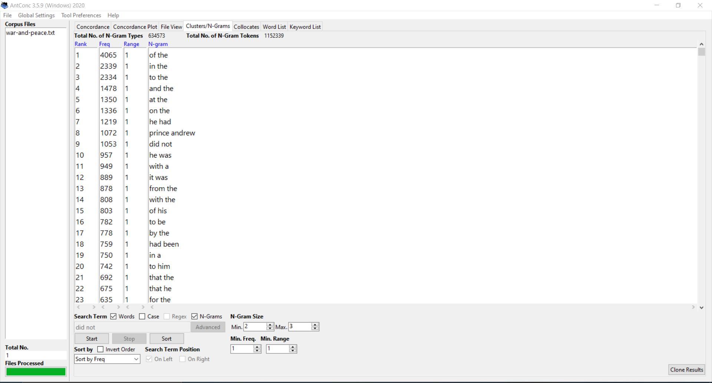

Corpus Analysis
The Man In The Iron Mask
Click here for full text
Corpus Analtsis
The Man in the Iron Mask" is a historical fiction novel, written by Alexandre Dumas, that takes place in the 1600s in France. Aramis, one of the former musketeers and a bishop, goes to the Bastille to visit Philippe, the imprisoned twin brother of the current king, Louis XIV. He tells Philippe that he can put him on the throne, switching him with his brother. This piece takes place before War and Peace which was written in the 1800's. However these two texts have similarities and difference throughout. The two pieces have overlapping themes such as honor, Patriotism, Love, and History. In the Corpus Analysis from Voyant you can see that King, Monsieur, and man are some of the most used words other than names and articles. Whereas in War and Prince, man and French are some other the biggest words through. They both have some form of nobility focus on the center of the story. Both have a focus on France, War and Peace is mostly set in Russia and France acts either as an Ally or enemy throughout the book while The Man in The Iron Mask takes place entirely in France.
War and Peace


Corpus Analtsis
War and Peace is a Russian historical fiction novel written by Leo Tolstoy, published in the late 1800's. The story charts the alliances and wars between Russia and France at the beginning of the 19th century. War and Peace is having been stated as one of the most important novels in Russian and world literature. This piece happens later in history than the Man in the Iron Mask but has a lot of similarities and difference between the two texts. The two pieces have overlapping themes such as honor, Patriotism, Love, and History. In the Corpus Analysis we can see how the texts relate to each other. Prince, man, and French are some other the biggest words through the novel, and are some of the most used words other than names and articles. Whereas in the Man in the Iron Mask you can see that King, Monsieur, and man. Both Stories are Based around nobles; mainly the King and the Prince showing the power struggles both must overcome.